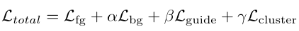

UntrimmedNets for Weakly Supervised Action Recognition and Detection (CVPR 2017)
UntrimmedNet首次提出弱监督用于动作识别和检测。
方法
如下图，首先生成clip proposals，即从视频中采样出较短的clips集合。然后将这些clip proposals输入到预训练好的网络中进行特征提取。之后，使用一个分类模块（Classification）来对每个clip proposal进行行为识别，以及一个选择模块（Selection）来检测或排序重要的clip proposals。最后，结合分类模块和选择模块的输出来产生视频级别的预测。
Clip sampling
给定一个长视频V，将其分割成N个clip proposals。
两种方法：
- 均匀采样：将长视频平均分成N个等长的clips。
- 基于镜头采样：提取每一帧的HOG特征，如果相邻帧之间的HOG特征区别大于某个阈值，即检测到了一个shot change。在每个shot内部，如果该shot的时间过长，则将其细分为多个等长的clips，每个clip的长度为K帧（K=300）。
UntrimmedNets
由3个模块组成：特征提取模块、分类模块和选择模块。
特征提取模块
在该模块，为每个proposal提取特征表示。UntrimmedNet不依赖于某个特定的特征提取网络。文章尝试了两个结构：Two-stream CNN和Temporal Segment Network，后者的spatial stream的输入是1个RGB帧，而temporal stream的输入是5帧TVL1 optical flow。
分类模块
根据前一个模块提取到的特征，对每个clip proposal进行动作分类。最终给出每个proposal对C个动作类别的得分向量（score vector）$x^c$。另外再对所有$x^c$做一个softmax得到$\overline{x}^c$：
原始分类score（$x^c$）含有原始的class activation信息，能反映该clip含有一个行为类别的程度。如果不包含行为，则它在每个类别上的值都会很小；softmax分类score（$\overline{x}^c$）由于经过了正则化操作，不能正确表示不含有任何行为的情况。
选择模块
选择模块的目标是选择出最有可能包含动作的clip proposals。论文提出两种选择方法：硬选择（hard selection，基于multiple instance learning 多示例学习，MIL）和软选择（soft selection，基于attention机制）。
- 硬选择方法：为每个动作类别识别出k个clip proposals子集合。选择k个分类得分$x^c$最高的proposals，然后对这些proposals求平均。
- 软选择方法：结合所有clip proposals的分类得分，学习得到重要性权重（importance weight）来对clip proposals进行排序。最终给出每个proposal经注意力权重后算出的选择得分（selection score）$x^s$。与前一模块相似，另外再对所有$x^s$做一个softmax得到$\overline{x}^s$。
需要注意的是，在分类模块中，softmax是对每个的proposal的所有类别的classification score进行操作；而在选择模块中，softmax是对不同的proposal进行操作。
视频预测
通过结合分类得分和选择得分来生成视频V的预测得分 $\overline{x}^p$。
对于硬选择方法，简单地对选出的top-k instances取平均
对于软选择方法，简单地计算分类得分和选择得分的乘积的加权和：
训练
使用交叉熵损失进行反向传播从而训练模型各模块的参数。
实验结果
动作识别结果：

动作定位结果：
IoU@0.5=13.7
(STPN)Weakly Supervised Action Localization by Sparse Temporal Pooling Network (2018 CVPR)
概述
文章认为，通过识别视频中的重要动作的一组关键片段，可识别出其中的动作。 因此，文章设计了一个神经网络，学习如何度量视频中每个片段的重要性，并自动选择具有代表性的片段的稀疏子集来预测视频级的类别。预测时，首先确定视频的类别，然后生成时序动作proposals。
其网络大致结构如下。将视频均分为N个segment；最后能够得出每个片段在预测分类标签过程中的重要程度，从而生成对应的类别标签以及区域建议。
动作分类
将训练视频均分为T个segment（作者在实际训练中T=400）。每个segment通过I3D得到维度T×1024的特征，通过一个attention module（注意力模块）生成对应segment的重要性。其中attention module（上图右下角）由两个全连接层以及一个ReLU层组成，然后经过Sigmoid后范围为0-1之间，输出维度为T×1，最后通过注意力权重与segment特征的加权和得到最终的视频特征表示，其表示为
其中$x_t$代表第$t$个segment的视频表示， $\lambda_t$表示为对应$x_t$的权重向量， $T$为该视频segments的数量。由于一个视频可能包含多个动作实例，因此再通过Sigmoid函数而不是softmax函数得到最终包含多个动作类别概率。 而针对于loss函数设计，作者考虑到attention module中注意力权重是接近于0或1的数值，因此作者loss函数由两部分组成， 分别为分类损失和稀疏损失。分类损失是基于ground-truth和$\overline{x}$之间标准的多标签交叉熵损失,而稀疏损失则由$l_1$损失函数组成。
Temporal Class Activation Mapping
为了确定与目标时间对应的时间区间，作者提出了一个叫做T-CAM的概念，表示时间步$t$时刻的该表示与各个类别的相关性。 作者在下图给出了视频attention weights和T-CAM的输出实例，attention weights和T-CAM有效地突出了各个时序区域。
一些具有较大定位权重的时间间隔不对应于较大的T-CAM值，因为这些间隔可能代表了其他干扰行为。attention weights测量时间视频片段的泛化动作，而T-CAM呈现类别特定信息。
时序动作定位
为了生成 temporal proposals，作者将光流flow和RGB图像分别送入网络，其输出与注意力权重相乘，然后得到加权后的T-CAM，通过给定阈值来分割出对应的action proposals。最后通过非极大值抑制生成最终的proposals。
实验
(CMCS)Completeness Modeling and Context Separation for Weakly Supervised Temporal Action Localization (2019 CVPR)
动作完整性建模和动作上下文分离
概述
弱监督导致的两个问题：动作完整性建模和动作上下文分离。
弱监督TAL的两大挑战
- 如何在没有完整注释的情况下检测出完整的动作实例。识别出动作的一个片段足以进行视频级分类，但不能进行片段级定位。比如，“罚点球”这一动作由“射门”和“球飞”这两个子动作组成，只要能识别出“射门”便可对这个视频进行分类，但要想定位“罚点球”的片段，“球飞”子动作很容易被漏掉。
- 如何用弱标签将动作实例与其上下文区分开来。在同一类动作实例的前后，通常存在一些在视觉上相似的镜头画面，这些画面被称为上下文（context）。比如，对“打台球”这一动作，在视频中往往存在镜头对着台球桌的静态画面。上下文和背景的区别是：上下文画面通常与真实动作同时出现，不涉及其他动作类别的视频；而背景画面是类别无关的，随机分布。文章认为，除非使用关于动作的先验知识，否则在弱监督情况下，动作—上下文分离本质上是困难的。
针对这两个问题，分别提出了多分支网络结构和难负例数据生成方案。
难负例数据生成
弱监督模型倾向于将真实动作与其上下文context相混淆，也就是hard negatives（可以理解为容易将负样本看成正样本的那些样本）。利用“静止的视频片段不太可能是动作”这一先验，为训练生成难负例数据。光流强度小于一个阈值（差不多是静止的画面）则把这个视频中的这些帧提取出来构成伪视频，并标记为背景类，添加到训练集中。
基于多分支网络的完整性建模
多分支网络包括：特征提取模块、嵌入模块、多分支分类模块和时序注意力模块。
特征提取模块
将视频分为T个snippets，进行特征提取。文中使用的是UntrimmedNet和 I3D 。
嵌入模块
以上提取的特征需要特定于本任务的特征嵌入。利用一个时序卷积层和一个ReLU激活层来嵌入特征。
多分支分类模块
在这个模块中，存在K个并行的分类分支，目的是让各个分支关注动作的不同部分，让每个分支更准确的反映当前分支的动作分布情况，也就是说，这几个分支应是互补的，可以反映出其他分支没有的信息。
每个分支将嵌入的特征序列输入到时序卷积层，得到C+1个类别的分类得分 $A_k$，再通过softmax输出类别激活序列 $\overline{A}_k$。
为了避免各个分支给出相似的CAS，必须对分支加以约束。文中使用了基于余弦相似度的多样性损失。（对于两个向量，余弦值越接近1，就表明夹角越接近0度，也就是两个向量越相似；越接近0，就表明夹角越接近90度，也就是两个向量越不相似）
最后对所有分支的CAS进行平均，并进行softmax。
如下图所示，a是真值；b是负责定位“射门”的CAS；c是负责定位“球飞”的CAS；d是CAS的平均，从而完整识别出整个动作。
时序注意力模块
输入的视频未经修剪，且包含无关背景。所以利用时序注意力模块学习各snippets的重要性权重。注意力权重与多分支分类模块中经平均后的CAS做加权和。最终输出长度为C+1的向量。然后计算其与GT的交叉熵，即标准MIL损失。
动作定位
实际中，一段视频可能含有不止一个类别，因此需设置阈值，当某一类别的得分高于阈值的时候才认为视频中出现了该类别。
实验
THUMOS’14
ActivityNet1.3
(Background Modeling)Weakly-supervised Action Localization with Background Modeling (2019 ICCV)
同为STPN的作者
概述
大多数之前的弱监督工作忽略了背景，但本文发现，对背景建模可以学习到更为丰富的动作理解及其时序范围。
许多网络使用一个注意力变量 $\lambda_t$ 来指定各帧在最终的视频级表示中所占的权重。而本文用$1-\lambda_t$ 来表示背景帧的权重，构建了一个聚合的视频级特征。
本文的创新
- 使用注意力模型来提取前景和背景帧，它们的外观被明确地建模。大多数之前的弱监督工作忽略了背景，许多网络使用一个注意力变量 $\lambda_t$ 来指定各帧在最终的视频级表示中所占的权重。但本文发现，对背景建模可以学习到更为丰富的动作理解及其时序范围，类似地，本文用$1-\lambda_t$ 来表示背景帧的权重。
- 将自底向上的、类别无关的注意力模块与自顶向下的、特定类别的激活图结合起来，使用后者作为前者的自监督形式。
- 小视频补充训练。社交平台上有大量小视频，用户发送小视频的时候常常会带相关的话题，可以粗略地将这些话题作为视频级标签，以扩充训练数据。本文表明，在现有的训练数据中添加小视频可以大幅增加学习效果，从而提高动作定位的准确性。
弱监督定位
训练数据表示为$(\{x_t\},y)$，即（视频第t帧的特征向量，视频级标签）。
Weak Supervision
对整个视频的帧特征进行注意力加权平均，得到视频级的前景特征$x_{fg}$：
对每个类别c，做softmax：
计算前景分类损失：
背景感知（Background-Aware）损失
对于背景帧，也应该做同样的处理

这里y=0是因为0被当作是背景类。
自引导注意力（Self-guided Attention）损失
$\lambda_t$ 是一个自下而上的，类别无关的attention，它可能会响应一些一般线索，如大型的肢体动作，而不会具体到一些特定的动作。而TCAM可以提取自顶向下的attentional线索。因此，提出类特定的TCAM attention map作为自监督重新微调$\lambda_t$，如下式。其中G(σ)是高斯过滤器，用于在时序上平滑attention信号。高斯平滑强加了直观的先验：如果一个帧大概率是一个动作，那它的邻近帧也应该大概率包含一个动作。
则自引导损失：
前景背景聚类（Foreground-background Clustering）损失
考虑了一个完全由视频特征和注意力λ定义的自下而上的损失，鼓励分类器对前景或背景特征响应强烈。
总损失

3个超参要足够小，以使网络主要由前景损失来驱动。
动作定位
为了生成动作proposals和detections，首先基于视频级分类概率$p_{fg}$识别相关动作类别。然后用相应的加权t-cam对这些提议进行评分，以获得最终的检测结果。
最后进行NMS非极大值抑制。
与CTPN的比较
(BaSNet) Background Suppression Network for Weakly-Supervised Temporal Action Localization (2020 AAAI)
为了构建背景类的负样本，在网络中引入注意力模块抑制背景响应。
概述
发现之前的工作没有考虑到背景类别，会将背景帧误分为动作类别，造成大量FP。本文提出了背景抑制网络BaSNet，引入了额外的背景类，两支镜像网络(一支为base网络，一支为用attention抑制背景的suppression网络)，实验表明这样设计可以有效抑制背景的影响，从而提高定位的准确性。
方法
背景类
如果没有背景类，背景帧的激活会倾向于动作类，对精确定位造成干扰。因此，将背景归为“背景类”，也就是说，视频中的所有帧就都有自己的目标类别。这样，所有训练视频都会被标记为背景类的正样本（因为每个视频都包含背景帧）。这会造成数据不平衡（找不到完全没有背景的负样本），最后导致背景类的异常高响应，定位结果很差。因此，为了更好地利用背景类，我们设计了包含基分支和抑制分支的背景抑制网络(BaS-Net)。
双分支结构
基分支（base branch）：采用常用的MIL架构，以帧级特征作为输入，生成帧级类别激活序列(CAS)，将视频分类为动作类和背景类的正样本。
抑制分支（suppression branch）：首先经过一个注意力模块（filtering module），用于减小来自背景帧的输入特征，即抑制背景的响应。attention模块参考自STPN (CVPR2018) ，将fc换成时域卷积，并且与STPN的attention输入为单个clip特征不同，本文的attention的输入为视频特征。经过过滤模块后，是与基分支相同的共享权重的卷积模块。抑制分支的目标是最小化所有视频的背景类得分。
这两个分支唯一的不同点就是输入(抑制分支的输入经过attention处理)和background label(基分支的背景类为1，抑制分支的背景类为0) 这两点不同。这样做的目标是更好的训练filtering module使其学到前景信息，从而有效过滤并抑制背景的响应。
最后的location模块在测试阶段选取supp分支的输出。后续操作仍然采用多阈值分割后NMS的方式。